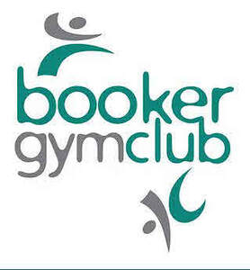

Trade Mark Journal No.2026/008 20 February 2026
UK00004325590 16 January 2026 (9,25,28,41,44)

- Class 9
- Digital signage; Downloadable digital assets; Digital recordings; Digital recording media; Downloadable digital photos; Computer software for the display of digital media; Digital signs; Digital picture frames; Digital boards.
- Class 25
- Clothing; Clothing for sports; Embroidered clothing; Clothing for gymnastics.
- Class 28
- Clubs for gymnastics; Hoops for rhythmic sportive gymnastics; Clubs for rhythmic gymnastics; Rings for gymnastics; Gymnastics rings; Ropes for rhythmic gymnastics; Ribbons for rhythmic gymnastics; Rhythmic gymnastics ribbons; Gymnastics (Appliances for -); Appliances for gymnastics; Springboards [for gymnastic]; Gymnastic apparatus; High bars for gymnastics; Parallel bars for gymnastics; Pommel horses [for gymnastic]; Gymnastic benches; Gymnastic and sporting articles; Gymnastic articles; Gymnastic training stools; Beams [gymnastic apparatus]; Balance beams [for gymnastic]; Horizontal bars [for gymnastic]; Gymnastic uneven bars; Parallel bars [for gymnastic]; Gymnastic parallel bars; Ribbons specially adapted for rhythmic sportive gymnastics; Sport hoops; Hurdles for use in athletics training; Hoops for exercise; Portable home gymnastic apparatus; Benches for gymnastic use; Vaulting poles (sports equipment); Sports training apparatus; Exercise trampolines; Indoor fitness apparatus; Cheerleading pom-poms; Gym balls for yoga; Springboards for sports.
- Class 41
- Education and training; Education, teaching and training; Training and education services; Training; Education; Training or education services in the field of life coaching; Organisation of training courses; Providing courses of training; Educational and training services relating to healthcare; Educational and training services relating to sport; Physical education instruction; Coaching [training]; Training of sports teachers; Education services; Fitness training services; Residential education courses; Recreation and training services; Life coaching (training); Entertainment, education and instruction services; Provision of training; Adult training; Publication of educational and training guides; Providing training and educational examination for certification purposes; Physical training services; Educational and training services relating to games; Pre-school education; Health education; Aerobics training services; Personal development training; Physical education; Provision of training courses for young people in preparation for careers; Conducting training courses relating to nutrition online; Sports training; Training in sports; Training related to nutrition; Physical education services; Health and fitness training; Gymnastics (Instruction in -); Gymnastics instruction; Instruction in gymnastics; Tuition in gymnastics; Gymnastic instruction; Organising gymnastics events; Gymnastics events (Organising of -); Gymnastics displays (Organising of -); Aerobics competitions; Provision of gymnastic instruction; Arranging of athletics competitions; Organising of gymnastic displays; Entertainment in the nature of gymnastic performances; Rental of equipment for use at gymnastic events; Sports and fitness; Providing gymnastic facilities; Ballet classes; Judo instruction; Sports coaching; Aerobic and dance facilities; Exercise and fitness classes; Dancing competitions (Organising of -); Organising of dancing competitions; Gym activity classes; Arranging of sports competitions; Sports and fitness services; Organising of sports competitions; Competitions (Organising of sports -); Sports competitions (Organising of -); Personal coaching services in the field of ballet; Organising of sports events and of sports competitions; Organising of sports competitions and sports events; Instruction in ballet; Dance club services; Organisation of dancing competitions; Sports tuition, coaching and instruction; Instruction in sports; Pole dancing instruction; Organizing and conducting college sport competitions; Sports coaching services; Competitions (Organization of sports -); Organization of sports competitions; Dance instruction for children; Conducting physical fitness conditioning classes; Fitness and exercise instruction; Dance instruction; Ballet schools; Conducting of sports competitions; Physical fitness instruction; Dance schools.
- Class 44
- Health care; Mental health services; Health counseling; Health spa services; Health screening; Health center services; Medical health assessment services; Home health care services; Health care relating to therapeutic massage; Occupational health consultancy; Health care relating to homeopathy; Consultancy relating to health care; Cosmetic body care services provided by health spas; Advisory services relating to health care; Consulting services relating to health care; Professional consultancy relating to health care; Health care relating to remedial exercise; Consultancy services relating to health care; Human hygiene and beauty care; Medical and healthcare services; Medical care; Providing health information; Nutrition counseling; Hygienic and beauty care services; Healthcare; Exercise facilities for health rehabilitation purposes (Provision of -).
HIGH WYCOMBE JUDO CENTRE LIMITED(THE)